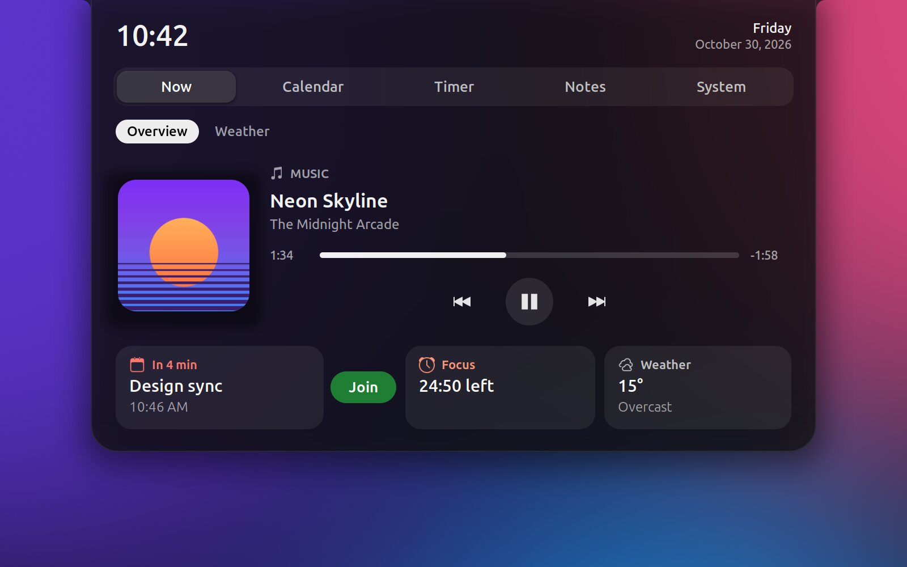
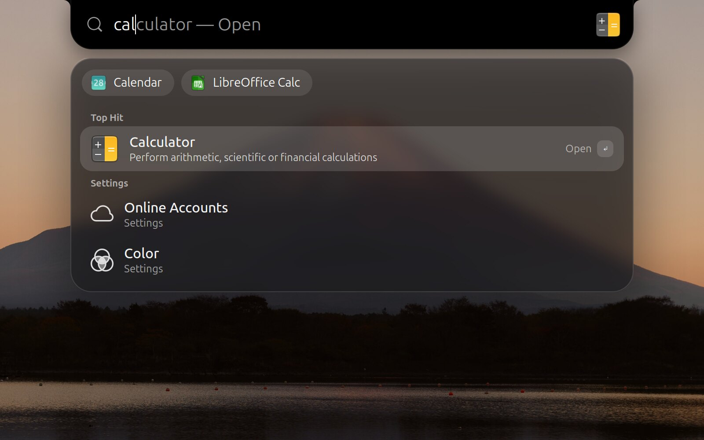

Gestures on the notch
Scroll over it for volume. Swipe sideways to skip a track.
Free for Linux Windows next
Music, meetings, timers and alerts, right where your eyes already go. Attach it to the edge like a MacBook notch, or float it as a pill.
The notch keeps its height and stretches sideways with a little spring. An icon slides out on the left, the status on the right, and it settles back.
The notch grows into a hub that opens on Now: what's playing, your next meeting, the focus timer and the weather. Four more sections hold your calendar and tasks, the timer, notes and the system monitor.


Press Super Space and the notch becomes a search bar that finishes your words. Press Tab to take the suggestion. Results float below on frosted glass: apps, settings, files and system actions.
Type 12*7+3 for a calculator.
Both shapes do the same things. Switch any time: right-click the notch, or use the switch at the top of this page.
Scroll over it for volume. Swipe sideways to skip a track.
A green or orange dot whenever an app uses the camera or microphone.
Built from your favorites. Icons grow as you pass over them, and it hides when a window needs the room.
Right-click the notch, press Super , or open Notchex Settings from your apps.
Google Calendar and Tasks through GNOME Online Accounts. No extra sign-in.
Frosted glass, a Control Center look, an auto-hiding top bar and three-finger zoom. Each one can be turned off.
Plain GJS on top of GNOME Shell. The notch reacts to events instead of checking for them, so at rest it does almost nothing.
Notchex only goes online for features you turn on, like weather or meeting links. Tokens stay in memory and never touch the disk.
The clock ticks once a minute. System stats are read only while you look at them, and the music bars run in their own process.
Installs for your user only. Turn a part off and it stops completely. Uninstall and it's gone.
Run this in a terminal, then log out and back in.
curl -fsSL https://raw.githubusercontent.com/AdityaTakuli/Notchex/main/install.sh | bash
Next up: Notchex for Windows, with the same notch, pill and alerts.